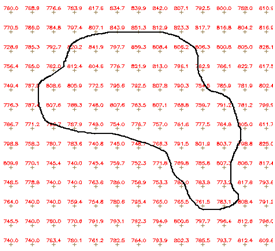
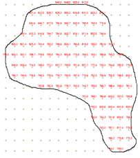

Dado Matricial
SÉRIE DE DADOS DO TIPO MATRIZ
Os dados dinâmicos do tipo matriz (ou grades retangulares) podem ser oriundos de diversas fontes como apresentado em Dados e Formatos. Para facilitar o seu uso foi incluído a leitura desses dados nos seguintes formatos:
- Matriz GrADs: formato de arquivos matriciais binários que utilizam um arquivo auxiliar (CTL) para descrever as propriedades do arquivo que pode ter uma ou várias camadas.
- Matriz GDAL (demais formatos)
- Matriz Grib2 (em testes)
- Matriz HDF (em testes)
- Matriz ASCII
- Matriz GeoTiff
- ADICIONANDO DADO DINÂMICO - MATRIZ:
Para adicionar um novo dado dinâmico do tipo matriz é necessário ter um projeto ativo. No menu de opções selecione “Dados Dinâmicos” para que a lista de dados disponíveis seja apresentada na área de trabalho. Clique no botão “ + ” para adicionar novo dado. Utilize o botão “Salvar” para salvar o dado dinâmico. Não é permitido nomes de dados em duplicidade. Botão “Cancelar” volta à tela anterior sem salvar o dado. Detalhes de cada campo a seguir.
Registro de Dado Dinâmico - Geral:
- Formato: Escolha o tipo entre, Matriz ASCII, Matriz GDAL (demais formatos), Matriz GeoTiff, Matriz GrADs ou Matriz Grib2 para formatos do tipo matriz (grades retangulares). Dependendo do tipo escolhido alguns parâmetros específicos serão apresentados para preenchimento. IMPORTANTE: Uma vez escolhido não pode ser alterado, a menos que saia da edição e retorne.
- Nome: Defina o nome do dado dinâmico (campo obrigatório para passar para os demais itens). O tamanho máximo do nome é de 100 caracteres. Não é permitido nomes duplicados.
- Descrição: Campo não obrigatório para descrição do dado dinâmico. O tamanho máximo da senha é de 250 caracteres.
- Servidor de Dados: Escolha o servidor de onde será coletado os dados por servidores remotos do tipo FTP ou HTTP/HTTPS, ou para dados disponíveis em servidores de arquivos locais - ARQUIVO.
- Ativo: Botão ativo permite coletar o dado dinâmico em questão e que está associado ao servidor escolhido acima. Botão desmarcado nenhuma coleta será realizada.
Registro de Dado Dinâmico - Parâmetros:
- Arquivo CTL (somente se formato for Matriz GrADs): Nome do arquivo que define a formatação dos dados definidos pela máscara do arquivo binário. O fornecedor do dado deverá informar um único arquivo de controle para todos os arquivos da série que serão coletados. Se o arquivo CTL estiver em sub-diretórios definido a partir do caminho informado na definição do servidor, acrescente estes subdiretórios na frente do nome do arquivo (por exemplo: satelite/goes13/infra/GOES13_CH4.ctl ).
- Projeção (SRID): Valor numérico dos parâmetros de projeção e datum dos dados a serem coletados. Obrigatório para os formatos Matriz GrADs e Matriz ASC-Grid.
- Fuso Horário: Fuso horário do local onde o dado dinâmico foi gerado. Esse parâmetro garante que as datas e horas dos dados coletados se mantenham consistentes com a base de dados. Dados em horário GMT devem utilizar o valor 0.
- Número de camadas (somente se formato for Matriz GrADs): Número de camadas do arquivo incluindo a camada zero. Arquivos com mais de uma camada são normalmente utilizados por dados do tipo previsões numérica de tempo onde cada camada representa um horário de previsão para a variável em questão, e neste caso utilize a opção “Temporal” abaixo. Se maior do que 1, deverá informar ainda se há “bytes” de separação entre as camadas.
- Multiplicador (somente se formato for Matriz GrADs): Permite a definição de um fator multiplicador a ser aplicado aos valores da grade. Verifique ao fornecedor do dado se há necessidade de utilizar este parâmetro, caso contrário, use valor 1 para não alterar os valores originais do arquivo lido.
- Tipo de dado (somente se formato for Matriz GrADs): Permite indicar se os dados presentes no arquivo estão armazenados como valores em ponto flutuante (Float 32) ou como valores inteiros (Integer 16).
- Máscara do arquivo binário: Máscara do nome dos arquivos a serem coletados. Esta máscara utiliza partes constantes para capturar prefixos utilizados nos nomes dos arquivos e sequências especiais para indicar ao sistema como interpretar informações de data e hora contidas nos nomes dos arquivos. Utilizar %YYYY para anos de 4 dígitos, %YY para anos de 2 dígitos, %MM para mês, %DD para dia, %hh para hora, %mm para minutos e %ss para segundos. Caracteres que não mudam podem ser mantidos ou substituídos por * (asterisco). Para o formato “Matriz GrADs” os arquivos a serem lidos podem estar em subdiretórios definido além do caminho informado pelo arquivo CTL acima, neste caso, forneça o nome do subdiretório na frente do nome da máscara.
Exemplo: Arquivos com um prefixo “radar” seguido da data e hora como os arquivos abaixo -
radar200805271030.tif, radar200805281030.tif, …
A máscara a ser utilizada deve ser : radar%YYYY%MM%DD%hh%mm.tif
NOTA: Uma máscara no nome dos diretórios também são permitidos. Alguns dados podem estar organizados em pastas referentes a cada mês do ano. Como exemplo, para dados em uma pasta correspondente ao mês “02” como radar_SR/02/radar%YYYY%MM%DD%hh%mm.tif utilize radar_SR/%MM/radar%YYYY%MM%DD%hh%mm.tif
- Bytes anteriores (somente se formato for Matriz GrADs): Número de bytes que antecedem cada camada. Valor padrão 0 (sem bytes separador). Consulte o fornecedor do dado para saber se há algum byte que antecede cada camada.
- Bytes posteriores (somente se formato for Matriz GrADs): Número de bytes posteriores a cada camada. Valor padrão 0 (sem bytes separador). Consulte o fornecedor do dado para saber se há algum byte que precede cada camada.
NOTA: Modelos de previsão (Eta e Brams) do CPTEC-INPE no formato GrADs tem 4 bytes entre as camadas.
- Temporal: Marque este item caso as camadas de um arquivo GrADs representem intervalos de tempos entre as previsões.
- Intervalo de tempo: Quando arquivo GrADs representa um dado temporal, deve-se obrigatoriamente informar o intervalo de tempo entre cada camada. Consulte o fornecedor do dado pois cada modelo de previsão pode ter um valor diferente de tempo entre as camadas.
- Unidade de tempo: Para um dado temporal escolha uma unidade entre Minutos, Horas e Dias.
- Bandas (separadas por ponto e vírgula) (somente se formato for Matriz - Grib2):
- Superfície isobárica (ISBL) (somente se formato for Matriz - Grib2):
Registro de Dado Dinâmico – Armazenar ⊕ :
Utilize os parâmetros dessa aba quando necessário armazenar os dados coletados de servidores remotos ou quando deseja-se converter para um formato diferente em servidor local.
- Formato de saída: Escolha o formato de saída. Para dados dinâmicos matriciais escolha “Matriz – GDAL (demais formatos)”.
- Armazenar Dados: Servidor de dados que irá armazenar dados coletados. Para dados dinâmicos matriciais somente servidores de arquivos (tipo ARQUIVO) estarão disponíveis.
- Serviço: Escolha o serviço de coleta a ser utilizado.
- Pasta de saída: Caminho (diretório) onde os arquivos de dados serão armazenados. A pasta (ou sub-pastas) informada será adicionada ao caminho informado pelo servidor de arquivos escolhido em “Armazenar Dados”.
- Máscara do arquivo de saída: Máscara do nome dos arquivos a serem armazenados. Utilize %YYYY para anos de 4 dígitos, %YY para anos de 2 dígitos, %MM para mês, %DD para dia, %hh para hora,%mm para minutos e %ss para segundos.
- Fuso Horário: Fuso horário do dado dinâmico a ser armazenado. Esse parâmetro garante que as datas e horas dos dados coletados se mantenham consistentes com a base de dados. Dados em horário GMT devem utilizar o valor 0.
- Projeção (SRID): Valor numérico dos parâmetros de projeção e datum dos dados a serem armazenados. Se valor diferente do dado coletado, será aplicada a reprojeção do dado dinâmico.
- Armazenar ⊕- Agendamento: Nessa sessão o usuário deve definir quando será executada a coleta e o armazenamento se houver.
- Tipo: Escolha tipo Manual ou Agendamento. Se Manual a coleta e armazenamento só será realizada se o usuário utilizar o botão 4Executar na lista de dados dinâmico do item desejado. Se Agendamento preencha os campos abaixo.
- Unidade de tempo: Escolha um item entre “Segundos, Minutos, Horas e Semanalmente”.
- Frequência (somente se Unidade de tempo for Segundos, Minutos, Horas): Digite um valor de um número inteiro.
- Tempo Inicial (somente se Unidade de tempo for Segundos, Minutos, Horas): Clique no campo para escolher o valor de hora, minuto e segundo que será utilizado como referência para executada a coleta e armazenamento do dado dinâmico.
- Programação (somente se Unidade de tempo for Semanalmente): escolha uma das opções entre “Domingo, Segunda-feira, Terça-feira, Quarta-feira, Quinta-Feira, Sexta-feira e Sábado”
- Hora (somente se Unidade de tempo for Semanalmente): clique no campo para escolher o valor de hora, minuto e segundo que será executada a coleta e armazenamento do dado dinâmico.
Registro de Dado Dinâmico – Filtrar ⊕:
Utilize os parâmetros dessa aba para limitar o período (início e fim) da coleta de um dado em servidor ou executar um recorte na área do dado e ser coletado.
- Filtrar ⊕ - Data: Nessa seção o usuário pode definir uma data/hora inicial e final para coletar dados.
- Ignorar dados anteriores a : Clique no campo para escolher a data e hora que será utilizado como referência para não coletar dados dinâmicos anteriores a escolha.
- Ignorar dados após : Clique no campo para escolher a data e hora que será utilizado como referência para não coletar dados dinâmicos posterior a escolha.
DICA: O servidor de dados pode ter um volume grande de dados históricos disponível na pasta onde será coletado os dados, portanto, se for definir um novo dado dinâmico que interessa somente a partir da data/hora atual, utilize somente o filtro para “Ignorar dados anteriores a”.
- Filtrar ⊕ - Área: Nessa seção o usuário deve definir se o dados dinâmicos matriciais deverão ser armazenados ao fazer interseção com o retângulo ou polígono(s) de um dado estático e ainda se deverão ser recortados nos limites desse retângulo ou polígono(s), para armazenar uma área menor de interesse no monitoramento.
- Selecionar o tipo de filtro por área: Por padrão a opção “Não filtrar” não aplica nenhum filtro ou recorte aos dados. Para “Filtrar por limites” defina dois pares de coordenadas, sendo o primeiro (mín) inferior esquerdo e o segundo (max) superior direito. Para “Filtrar por dado estático” cadastre previamente um dado estático vetorial com um ou mais polígonos que serão utilizados para filtrar a(s) área(s) de interesse.
- X min (somente para “Filtrar por limites”): Digite o valor mais a esquerda da área a recortar. Valor depende do sistema de projeção utilizado.
- Y min (somente para “Filtrar por limites”): Digite o valor mais abaixo da área a recortar. Valor depende do sistema de projeção utilizado.
- X max (somente para “Filtrar por limites”): Digite o valor mais à direita da área a recortar. Valor depende do sistema de projeção utilizado.
- Y max (somente para “Filtrar por limites”): Digite o valor ponto mais à cima da área a recortar. Valor depende do sistema de projeção utilizado.
- Projeção SRID (somente para “Filtrar por limites”): Valor numérico dos parâmetros de projeção e datum a ser utilizado pelo par de coordenadas acima.
Exemplo: Para sistemas de coordenadas geográficas utilize o valores em graus decimais (-23.43, –45.22) para longitude e latitude, e para sistema de coordenadas projetados utilize os valores em metros (345455.32, 7455432.43).
- Séries de Dados (somente para “Filtrar por dado estático”): Escolha o mapa que contém um dado estático vetorial de polígonos. Neste caso, a área da grade externa ao(s) polígono(s) será preenchida com o valor “dummy” (nulo) até o limite de retângulo envolvente mínimo desse(s) polígono(s).
- Recortar Matriz: Se botão inativo os dados matriciais serão apenas filtrados para verificar se há interseção com o retângulo ou polígono(s) de um dado estático informado, armazenando o dado matricial integralmente por menor que seja esta interseção. Se botão ativo além de filtrar os dados matriciais que fizerem interseção com o retângulo ou polígono(s), tais dados serão recortados nos limites desse retângulo ou polígono(s).
A Figura 2.14 mostra o recorte de um dado dinâmico matricial aplicando a opção “Filtrar por limites” (a) e “Filtrar por dado estático”(b).
(a) (b)
Figura 2.14 – Resultado do filtro por limites (a) e filtro por dado estático (b) sobre um dado dinâmico matricial.
Created with the Personal Edition of HelpNDoc: Free EBook and documentation generator